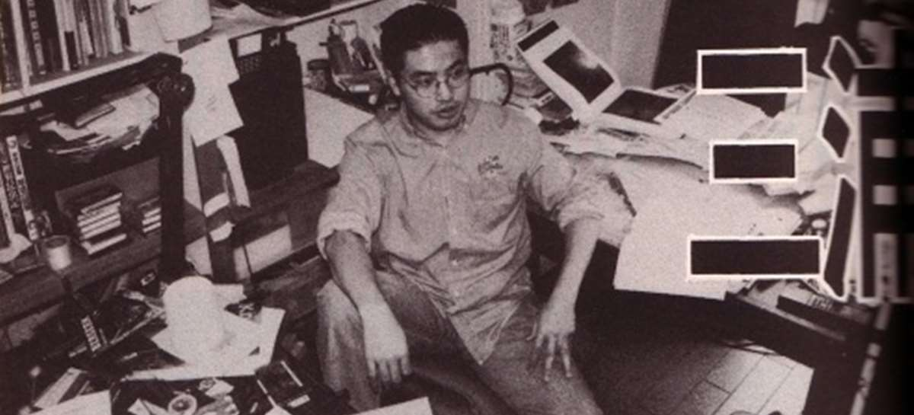
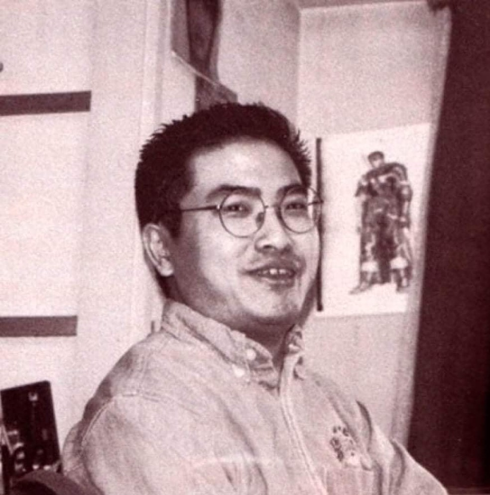

Kentaro Miura nasceu na cidade de Chiba, província de Chiba, Japão, em 1966. Em 1976, com a idade de 10 anos, Miura fez seu primeiro mangá, intitulado Miuranger, que foi publicado para seus colegas em uma publicação escolar; o mangá acabou abrangendo 40 volumes. Em 1977, Miura criou seu segundo mangá chamado Ken e no michi (剣 へ の 道 O Caminho para a Espada), usando tinta nanquim pela primeira vez. Quando ele estava no ensino médio em 1979, as técnicas de desenho de Miura melhoraram muito quando ele começou a usar técnicas de desenho profissionais. Seu primeiro dōjinshi foi publicado, com a ajuda de amigos, em uma revista em 1982.
Nesse mesmo ano, Miura se matriculou em um currículo artístico no Ensino Médio, onde ele e seus colegas começaram a publicar seus trabalhos em livretos escolares, além de ter seu primeiro dōjinshi publicado em uma revista produzida por fãs. Miura aos 18 anos trabalhou como assistente de George Morikawa, do famoso Hajime no Ippo. Morikawa reconheceu rapidamente o alto nível artístico de Miura e o dispensou, dizendo que não havia nada que ele pudesse ensinar que Miura já não soubesse. Em 1985, Miura se inscreveu para o exame de admissão em uma faculdade de arte na Universidade de Nihon. Ele submeteu seu projeto Futanabi para exame e foi admitido. Este projeto acabou agraciando seu autor com o prêmio de Melhor Novo Autor no Revista Shōnen semanal. Seu primeiro trabalho serializado, Noa, foi publicado na revista, mas não deu certo.[4] A serialização de Berserk começou no Monthly Animal House de Hakusenshaem 1989.
Em 1990, uma sequência é feita para Ourou intitulada Ourou Den (王 狼 伝ōrō den, A Lenda do Rei Lobo) que foi publicada como uma prequela do original na revista Young Animal. No mesmo ano, a edição de outubro da Animal House testemunha que o primeiro volume do projeto solo Berserk foi lançado com um sucesso relativamente limitado. Miura novamente colaborou com Buronson no mangá intitulado Japan, que foi publicado na Young Animal da 1ª edição ao 8 de 1992, e mais tarde foi lançado como um tankōbon autônomo.
Em 1997, Miura supervisionou a produção de 25 episódios de anime de Berserk que foram ao ar no mesmo ano na NTV. Vários livros de arte e materiais suplementares de Miura baseados em Berserk também são lançados. Em 1999, Miura fez contribuições para o videogame da Dreamcast, Sword of the Berserk: Guts 'Rage, incluindo a co-escrita do enredo da história. 2004 viu o lançamento de mais uma adaptação de videogame intitulada Berserk Millennium Falcon Arc: Capítulo da Guerra do Demônio Sagrado, que Miura também ajudou a escrever.
Em 2002, Miura recebeu o 6º Prêmio Cultural Osamu Tezuka, por Berserk. A partir de 2006, Berserk entrou em hiatos frequentes e frequentemente prolongados, e alternou entre serialização mensal e o lançamento irregular. Em 2018, Berserk foi compulado em 40 volumes no Japão, e em maio de 2021 havia mais de 50 milhões de cópias em circulação em todo o mundo, incluindo versões digitais. A série também gerou uma série de mercadorias, tanto oficiais quanto feitas por fãs, variando de estátuas, bonecos de ação a chaveiros , videogames e um jogo de cartas colecionáveis. Vários livros de arte e materiais suplementares de Miura baseados em Berserk também foram lançados.
Em 2013, Miura lançou o mangá independente Gigantomakhia, que foi lançado em territórios de língua inglesa como Giganto Maxia pela editora Dark Horse em 2016. Duranki, um curta mangá produzido pelo estúdio de mangá pessoal de Miura, Studio Gaga, foi serializado em Young Animal Zero em 2019
No dia 6 de maio de 2021, Kentaro faleceu aos 54 anos devido a uma dissecção da aorta. A morte foi divulgada no dia 20 de maio pela Hakusensha.